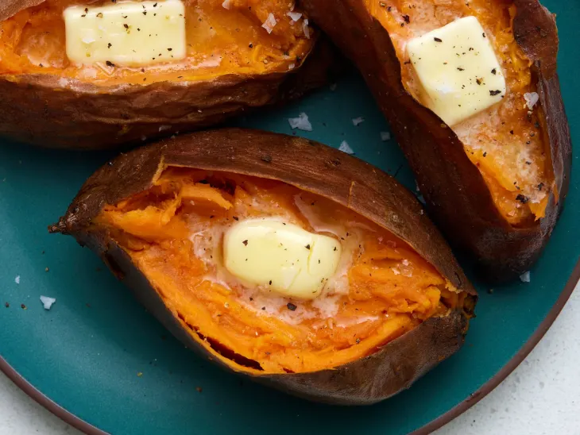
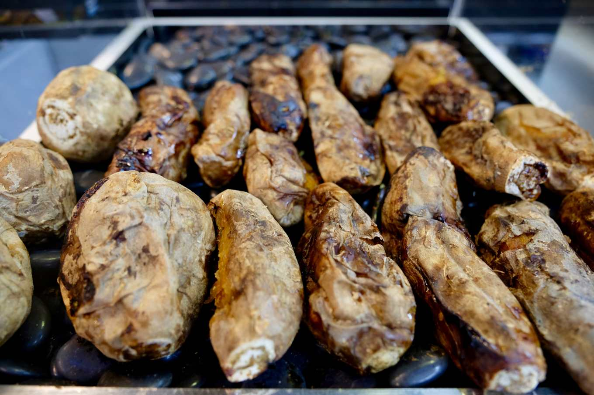

新鲜番薯
适合家庭烹饪、日常食用和备餐使用。
产品亮点
这个网站可作为番薯推广页面，用于获取季节促销、批发采购和销售咨询。
适合家庭烹饪、日常食用和备餐使用。
适合活动、餐饮业、转售和持续供货需求。
适合零售商、分销商和需要大批量采购的合作伙伴。
常见用途
番薯用途广泛，既适合家庭消费者，也容易切入食品与零售相关业务。
图片展示
目前先使用示意图库图片，之后可随时替换成你的农场、收成或产品实拍照片。


覆盖范围
新鲜番薯主要来自柔佛州笨珍。配送或供应范围可根据订单数量、时间安排和目的地进行协调。
关于网站
本 GitHub Pages 网站已加入多语言 SEO 结构，包括 canonical、hreflang、robots.txt 和语言版本 sitemap，方便搜索引擎正确识别各语言页面。
联系我们
请通过 WhatsApp 发送咨询，并填写数量、需求类型、送货地区或商业用途。